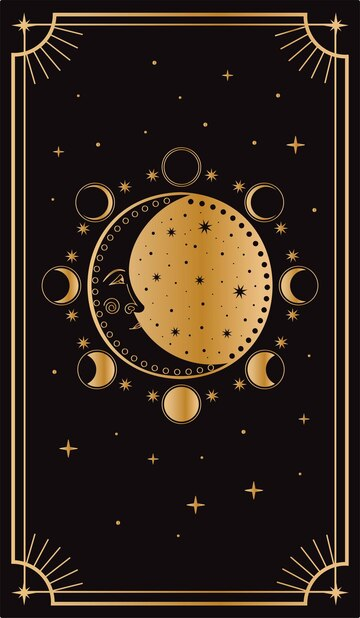

🔮 Wróżba z kart Tarota
Wybierz swój rozkład...
Przed Tobą karty, które znają odpowiedzi na pytania, których boisz się zadać. Wsłuchaj się w głos intuicji. Poczuj energię, która Cię prowadzi.
Wybierz temat wróżby:
-- wybierz --
Miłość
Kariera
Przyszłość
Dalej
Zanim karty przemówią...
Magia zaczyna się od Ciebie.
Podaj swoje imię i datę urodzenia — to klucz do Twojej energii, która prowadzi nas przez rozkład.
Twoje dane pomogą kartom połączyć się z Twoją aurą, odnaleźć właściwe przesłanie i otworzyć drzwi do głębszego zrozumienia.
🌙 Zaufaj procesowi. Wszechświat już słucha.
Wprowadź swoje dane, a kiedy będziesz gotowy — rozpocznij rytuał.
Dalej
Powrót do poprzedniego kroku
Zamknij oczy. Wejdź w głąb siebie.
Karty nie odpowiadają na powierzchowne pytania.
One słyszą to, co ukryte w ciszy Twojej duszy.
✨ Poczuj, co naprawdę Cię porusza.
Czy to miłość? Strach przed przyszłością? Trudna decyzja?
To właśnie teraz jest moment, aby zadać pytanie, które ma dla Ciebie prawdziwe znaczenie.
Zaufaj sobie. Wsłuchaj się w serce.
Kiedy będziesz gotowy — wypowiedz pytanie w myślach lub zapisz je przed sobą.
Karty już czekają, by odsłonić prawdę.
Otwórz się na odpowiedź
Powrót do poprzedniego kroku
Wybierz karty z talii:

Powrót do menu głównego